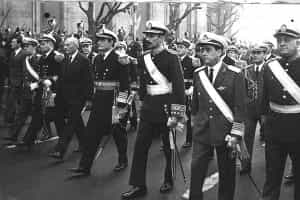

Quintus can be found at qcurtius.com. He is the author of the books On Duties, Thirty Seven, Sallust: The Conspiracy Of Catiline And The War Of Jugurtha, and other books. His work has been reviewed at Taki's Magazine. He can be followed on Twitter


The mainstream media narrative about Argentina in the 1970s goes something like this: (1) Argentina was governed by a brutal, merciless military junta from 1976 to 1983; (2) the dictatorship conducted an unprovoked campaign of extermination against leftists that left tens of thousands dead; (3) the leftists were innocent students. This story—in one form or another—is what has become part of the accepted narrative of this period of Argentinian history.
But the more documentaries I saw on this period, and the more I read about it, the more I was convinced that the entire story was not being told. It seemed to me that the country’s recent governments have had a vested interest in fanning the flames of resentment that have been stirred up since the 1990s. I have not been to Argentina, but I have spent much time in Brazil, a country that was also run by military governments in the 1970s and 1980s. The conversations I’ve had with older people in Brazil about this period track very closely with the interviews of Argentinians I’ve read about this period in their history.

Chile, as we have seen, also was ruled by a military dictatorship during the same time. So were some other countries in Central and South America. I began to ask myself whether this was pure coincidence, or whether there were good reasons why the countries in the region needed a firm hand at the reins at that time. The more I read, the more I began to see that the conventional wisdom has expunged much that needs to be told.
The first thing that seemed open to question was the alleged number of victims. In Argentina, the press frequently tosses around the number of 30,000. But declassified US documents put the figure at half that, around 15,000. It is true that governments regularly falsify data, but so do lobbying groups and private organizations. No one has yet explained where the number of 30,000 was arrived at. President Mauricio Macri himself seemed to have doubts about the number during a recent interview with Buzzfeed, where he said: “I have no idea [how many were killed]. That’s a debate I’m not going to enter, whether they were 9,000 or 30,000.”
Part of the problem is that the issue about the so-called “Dirty War” is heavily politicized in Argentina. When President Nestor Kirchner came to power in 2004, he apparently was willing to use the issue to score political points with the leftist press and with international human rights organizations. Kirchner nullified the amnesty laws that had protected military men from prosecution for events that had happened 30 years before.
By this single foolish act, he threw open the gates of political factionalism and vendetta. Amnesty laws have proven to be very effective in enabling societies to move on from civil violence; they have worked wonders in Algeria, allowing that country to move beyond the horrific events of the 1990s.
Flag of the Argentinian communist rebel group “People’s Revolutionary Army”
But Kirchner and his successor wife did not stop there. They converted former military interrogation and detention centers into “monuments.” They glorified the guerrillas of the 1970s—many of whom were out-and-out terrorists—and gave no thought to the victims of leftist violence. What has been forgotten is that communist and communist-inspired insurgencies were threatening a number of countries in South America during the 1970s.
These groups, funded by interested parties abroad, specifically intended to establish socialist or communist societies, and employed bombings and assassinations to further their goals. There certainly were a large number of innocent students caught up in the excitement of demonstrations and strikes, but behind this were dedicated revolutionaries. And the only way to defeat an insurgency is to hunt down the insurgents and remove them from circulation. This is the hard reality of counter-insurgency warfare.
In a recent article in The Guardian, one professor made this statement about the so-called “denialist” groups:
Mario Ranaletti, professor of history at Tres de Febrero university, has specialized in the mindset of Argentinian denialist groups. “They consider military repression was a good and morally unquestionable act,” he says. “To them the cold war was a religious war.” Even today Ranaletti overhears Argentinians who argue that “they should have killed them all.”
But Dr. Ranaletti misses the point. It is not so much that people are denying a nasty counter-insurgency war took place, it is that the media is absolutely refusing to acknowledge that the military government had specific reasons for doing what it did, and that—in the final equation—the country was better off in the long run for repressing the guerrillas. No one wants to say this openly, but I encountered the sentiment over and over again when I spoke with older people in Brazil.
Some voices are beginning to speak up. Attorney Victoria Villarruel heads an organization called the Center for Legal Studies on Terrorism and Its Victims (CELTYV). According to her estimates, about 1100 people were killed by leftist guerrillas between 1970 and 1979. But there is a serious double-standard at work. While the victims of government violence are allowed to bring claims in the courts, the victims of leftist violence are not.
“They were not idealists, they were terrorists” says a family member of a victim of leftist violence
Since 2006, about 500 cases have been brought on behalf of government victims. None have come from the other side. Whenever Villarruel has tried to petition the government for recognition that the leftists killed people, her petitions have been denied. She also challenges the narrative that rebels were “fighting a military dictatorship.”
In fact, she notes that the majority of the victims of communist violence came in the years before the dictatorship took power. The bottom line is that the military was dealing with an urban insurgency, and had to take severe measures to prevent civil war from breaking out. For her stance, Villarruel now comes under frequent threats and intimidation from leftist sympathizers.
Victoria Villarruel
I’ve had a few opportunities to talk about the military years with older friends in Brazil who were politically aware in the 1970s. The answers I’ve received to my questions convince me that the mainstream media’s narrative is grossly skewed to favor the leftists. I will say that my friends worked for state-run companies at the time, and I suppose could be seen as favoring the government. But here are the kinds of things they always said:
Look, the real story of those years is not told in the books. The military never bothered anyone unless they were leftist agitators or were committing violence. Even our president now [Dilma] was detained for participation in making bombs. Why doesn’t the media talk about that? They don’t, ever. There were demonstrations all the time. One day we woke up and there were tanks in the streets. That’s how it was.
But I can tell you one thing: the military in those days were actually less corrupt than the rats we have now. They cared about power and order, not so much about getting rich. And those stories about pregnant women in Argentina in detention centers? Let me tell you that a lot of them deliberately got pregnant because they thought it would get them released. So a lot of it is propaganda.
There was a real war there. To win a war, you have to be ruthless. It’s fashionable to hate the junta, to hate Pinochet, and our own dictators, but the economies we have now we owe to them. And that is the reality. The real mistake the junta in Argentina made is that they lost a war to Britain. Nobody has anything good to say about those who lose wars.
Read More: The Real Legacy Of Chile’s Augusto Pinochet